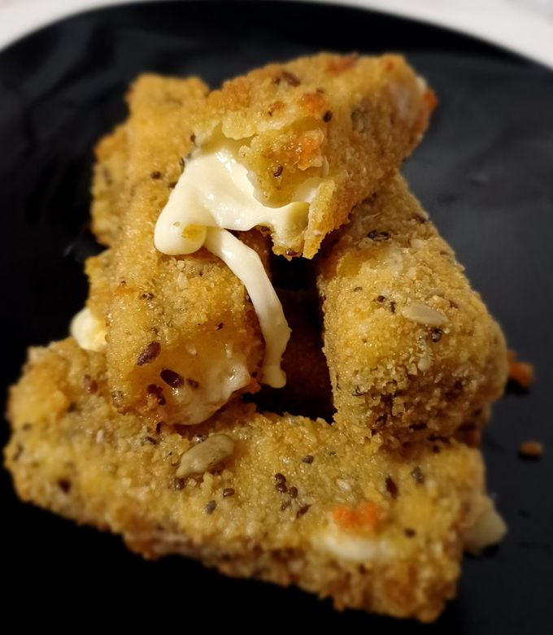
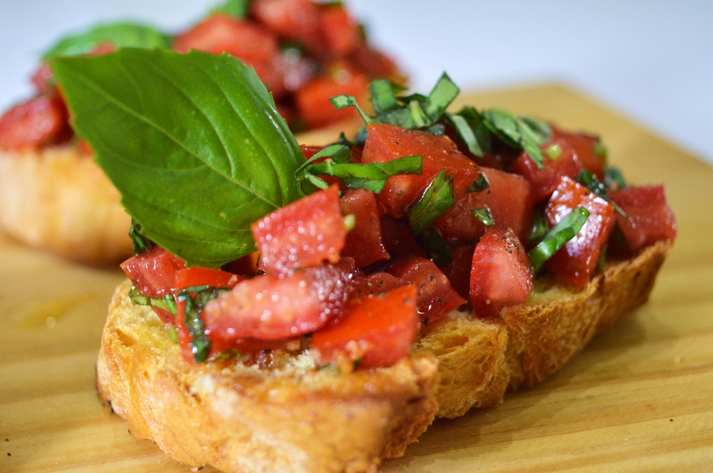
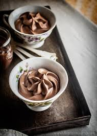

Bastoncitos de Queso Express

Pasos
- Cortar: Corta el queso en bastones uniformes.
- Empanar: Pasa cada bastón por huevo batido y luego por pan rallado (puedes repetir para más crocante).
- Congelar: Lleva al freezer por 15 minutos para que no se derritan rápido al cocinarlos.
- Cocinar: Fríe en aceite bien caliente o usa la freidora de aire hasta que doren.
Bruschettas de Tomate y Albahaca

Pasos
- Tostar: Corta el pan en rodajas y tuéstalo hasta que esté firme.
- Saborizar: Frota un diente de ajo por una de las caras del pan tostado.
- Mezclar: Pica el tomate y la albahaca, y mézclalos con un chorrito de aceite de oliva y sal.
- Armar: Coloca la mezcla sobre el pan y sirve de inmediato.
Mousse de Chocolate de 2 Ingredientes

Pasos
- Derretir: Funde el chocolate a baño maría o en el microondas (en tandas de 30 segundos).
- Batir: Bate la crema de leche hasta que esté firme (punto letra o chantilly).
- Integrar: Mezcla el chocolate derretido (tibio, no hirviendo) con la crema con movimientos envolventes.
- Enfriar: Sirve en copas y deja en la heladera al menos 1 hora.